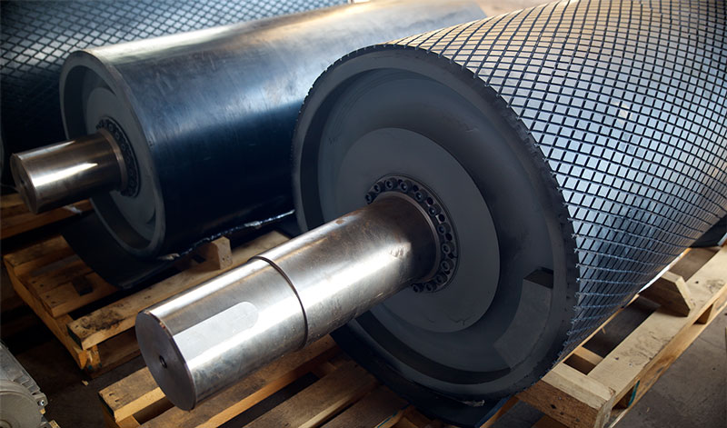
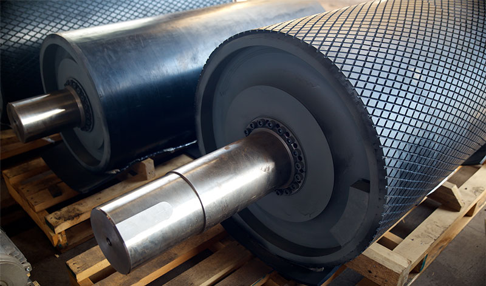
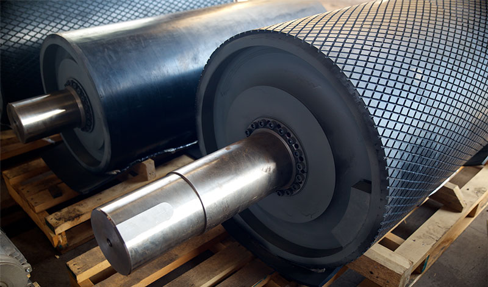

Our Conveyor Idlers & Rollers are engineered for seamless material flow in mining, bulk handling, and industrial conveyor systems. Designed with precision and high-quality materials, these components reduce friction, enhance belt life, and ensure smooth operation even under heavy loads.
They support and guide the conveyor belt, ensuring smooth movement and reducing belt wear.
Yes, we offer various diameters, lengths, and bearing types based on your conveyor system requirements.
We provide sealed, open, and heavy-duty bearings depending on load and environmental conditions.
Absolutely. They are designed for heavy-duty applications and high-impact environments like mining and bulk material handling.

Our Conveyor Idlers & Rollers are engineered for seamless material flow in mining, bulk handling, and industrial conveyor systems. Designed with precision and high-quality materials, these components reduce friction, enhance belt life, and ensure smooth operation even under heavy loads.
Available in various diameters, lengths, and bearing types, our conveyor idlers and rollers can be customized for impact, carrying, and return applications. They are ideal for industries like mining, cement, power plants, ports, and manufacturing units.